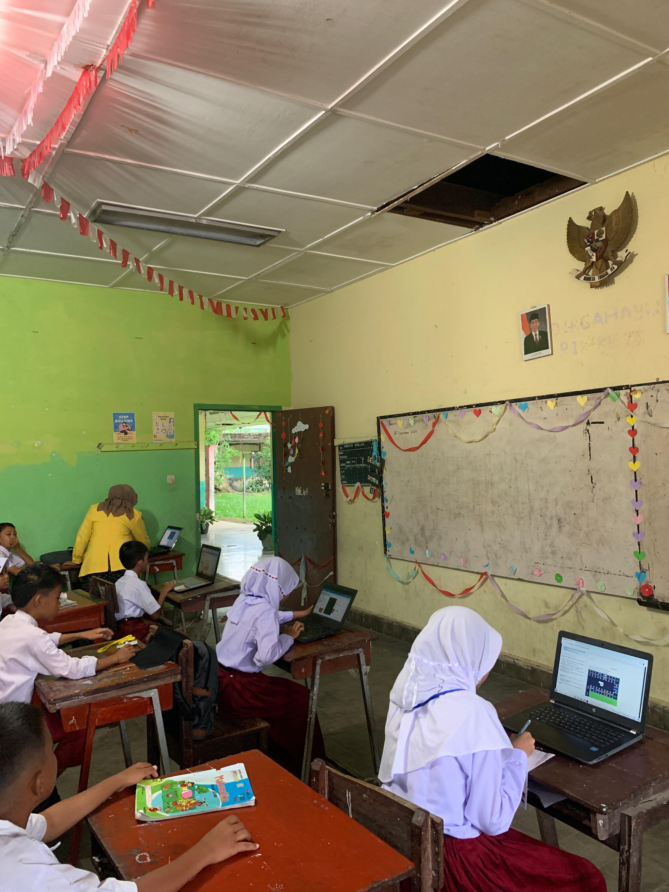
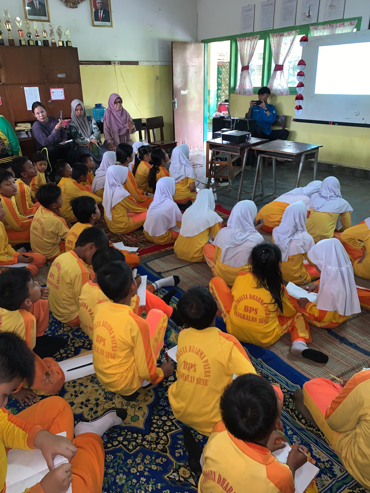
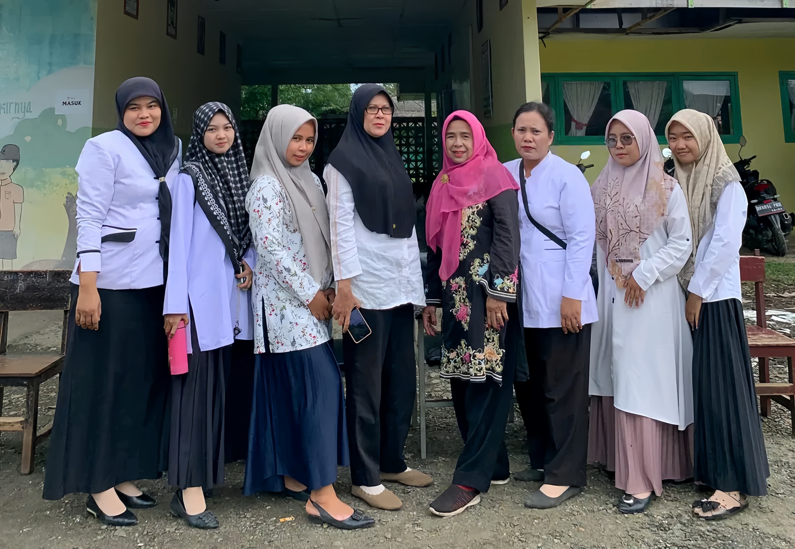
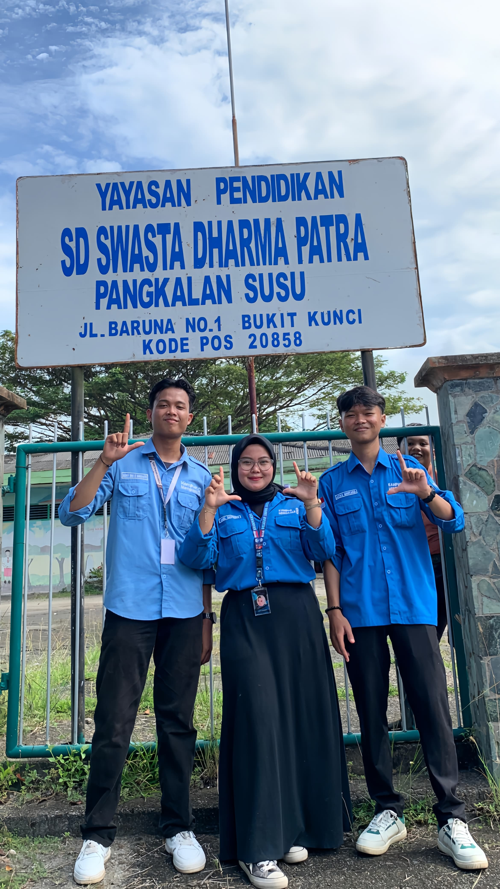
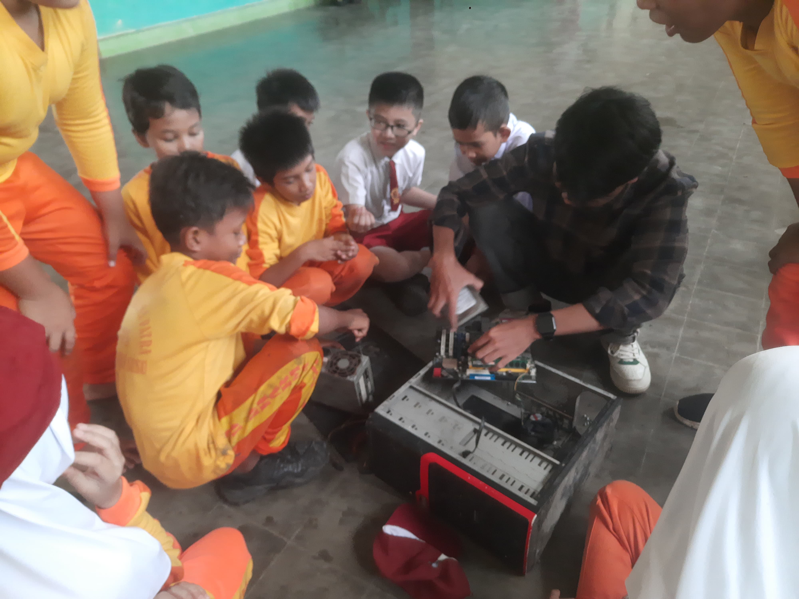
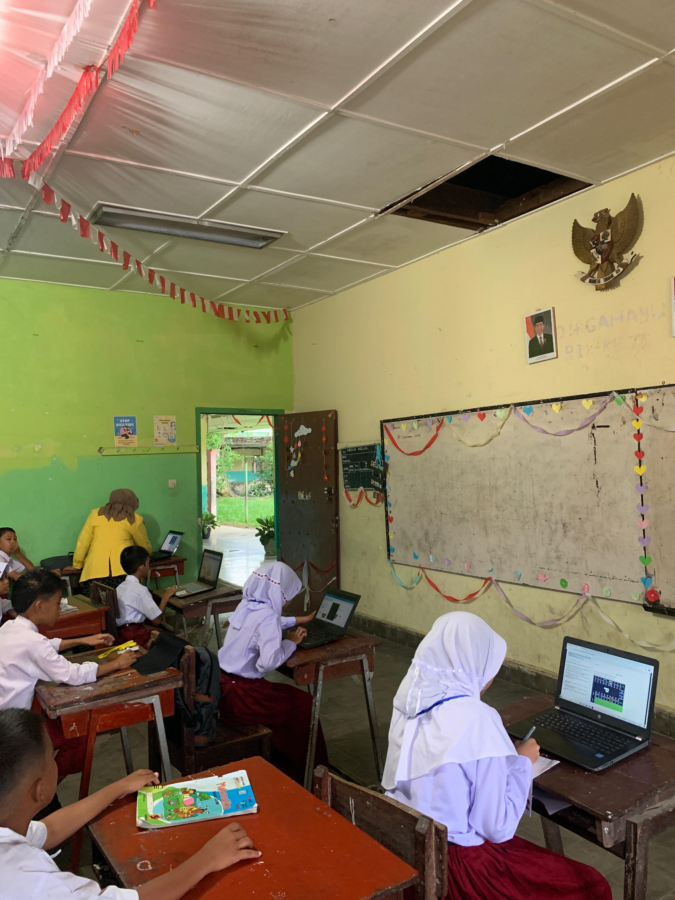
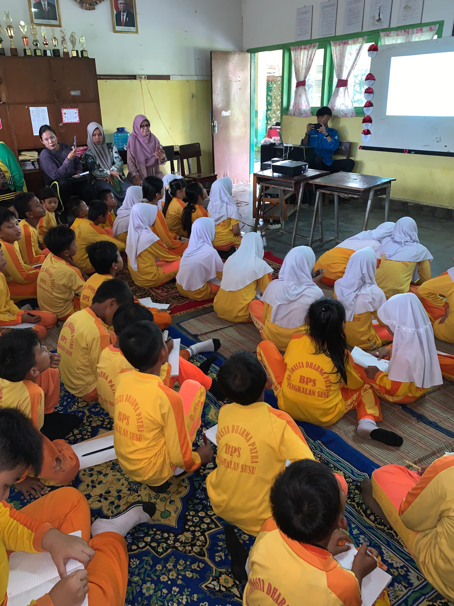
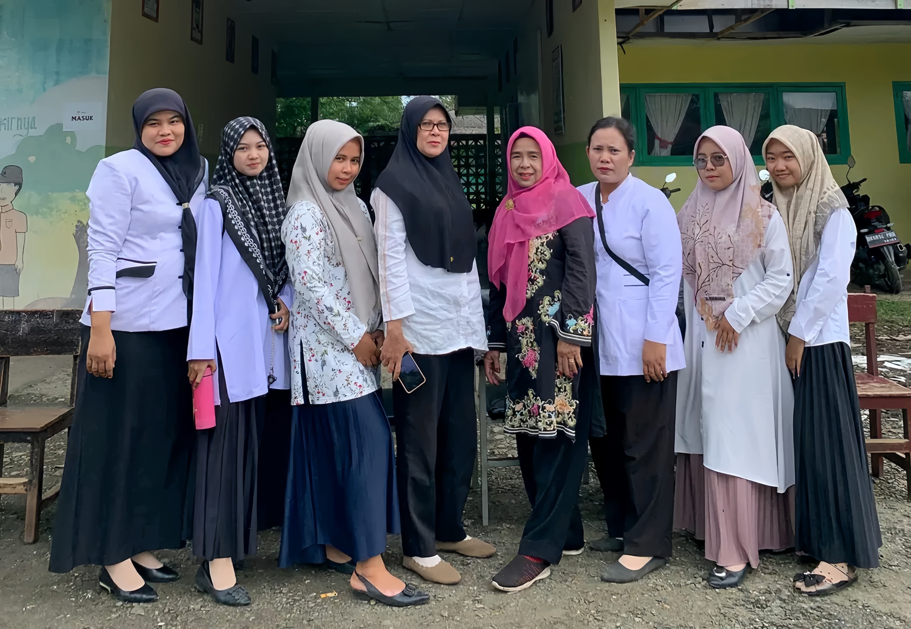
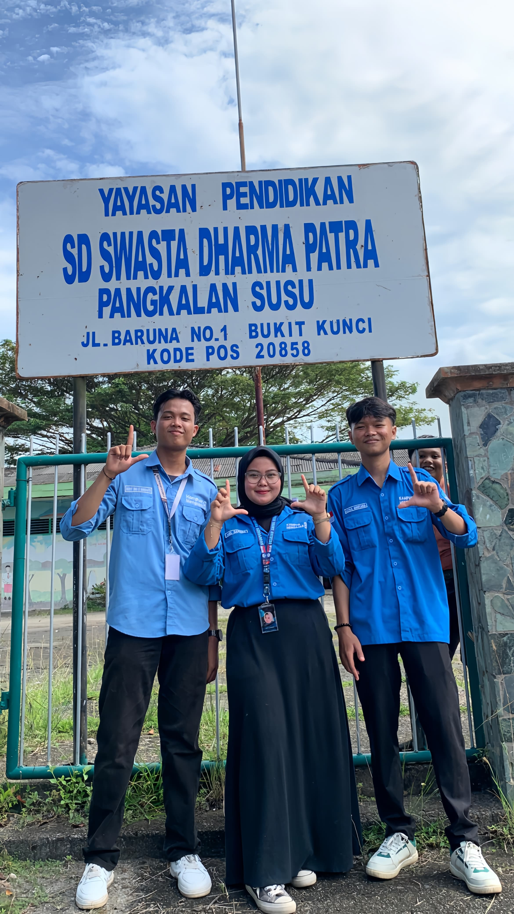
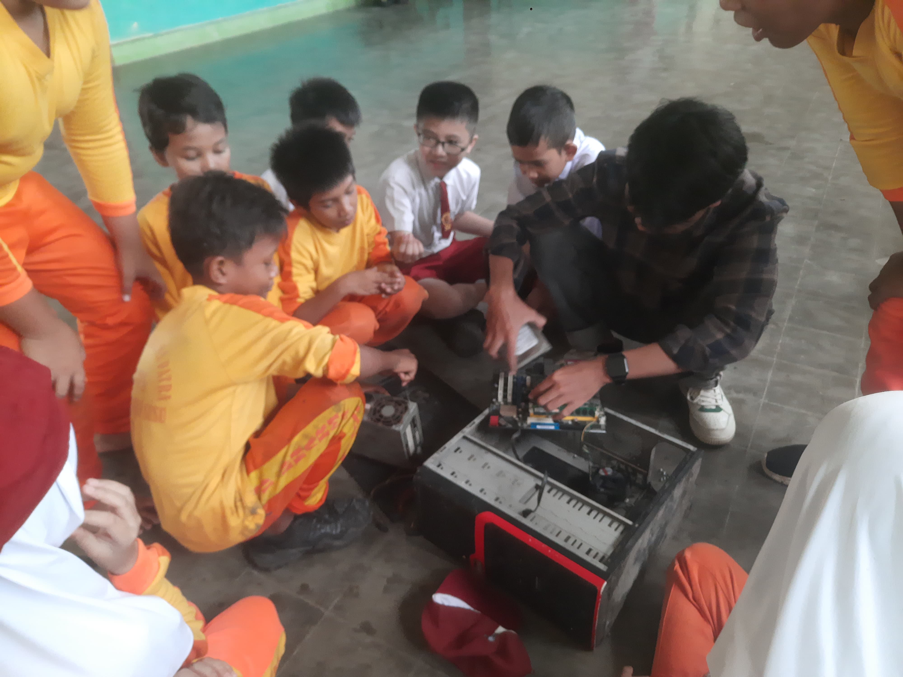

Tentang Sd Swasta Dharma Patra Pangkalan Susu
Kepala Sekolah : Jam'ah, S.Pd
SD SWASTA DHARMA PATRA bertujuan untuk Membentuk siswa yang Beriman dan Bertaqwa, Berdisiplin tinggi dengan penuh Tanggung Jawab, Mandiri, Terampil,
Mengutamakan tugas pokok dan mau bekerja keras.
VISI :
Terwujudnya Peserta Didik Yang Beriman, Berakhlak Mulia, Cerdas, Mandiri, dan Berwawasan Lingkungan.
MISI :
1. Mendorong aktivitas dan kreativitas secara optimal kepada seluruh warga sekolah terutama para siswa.
2. Mengoptimalkan pembelajaran dalam rangka meningkatkan keterampilan siswa supaya mereka memiliki prestasi yang dapat dibanggakan.
3. Melaksanakan pembicaraan dan bimbingan secara efektif sehingga kecerdasan siswa terus diasah agar terciptanya kecerdasan intelektual dan emosional yang mantap.
4. Antusiasi terhadap perkembangan dan kemajuan ilmu pengetahuan dan teknologi.
5. Menanamkan cinta kebersihan dan keindahan kepada semua komponen.
6. Menimbulkan penghayatan yang dalam dan pengalaman yang tinggi terhadap ajaran agama, Sehingga terciptanya kematangan dalam berfikir dan bertindak.
Instagram : @sdsdharmapatra
Facebook : S Dharma Patra
 AKM Kelas

Menonton Animasi Edukasi(PPKSP)

Kepala Sekolah, Para Guru, beserta Staff Sekolah SD Dharma Patra

Peserta Kampus Mengajar 8 SD Dharma Patra

Pengenalan Perangkat Keras (Hardware) Komputer

AKM Kelas

Menonton Animasi Edukasi(PPKSP)

Kepala Sekolah, Para Guru, beserta Staff Sekolah SD Dharma Patra

Peserta Kampus Mengajar 8 SD Dharma Patra

Pengenalan Perangkat Keras (Hardware) Komputer
